Language Selector
Set a different language for any app on Android 13+.
Свой язык для любого приложения на Android 13+.
Download APKСкачать APK- GitHub Releases:
language-selector-X.Y.Z.apk,SHA256SUMSand a VirusTotal link. Signing certificate SHA-256 (apksigner verify --print-certs):D0:8A:A0:A2:9B:A8:DB:44:E9:97:9A:75:1A:F2:1F:92:A3:38:19:55:DB:5E:69:F2:7E:EF:34:CA:83:CC:01:87 - Obtainium: add
https://github.com/vaas1k/Language-Selectoras a source, updates follow tags.
Google Play Protect may warn about this APK, because it is installed outside Google Play from a developer it does not know, and the app uses privileged APIs (root/Shizuku), which also triggers warnings. To verify the file, compare the APK's SHA-256 with SHA256SUMS in the release, check the signing certificate SHA-256 above and the VirusTotal link in the release notes. Then choose "Install anyway".
- GitHub Releases:
language-selector-X.Y.Z.apk,SHA256SUMSи ссылка на VirusTotal. SHA-256 сертификата подписи (apksigner verify --print-certs):D0:8A:A0:A2:9B:A8:DB:44:E9:97:9A:75:1A:F2:1F:92:A3:38:19:55:DB:5E:69:F2:7E:EF:34:CA:83:CC:01:87 - Obtainium: добавьте источник
https://github.com/vaas1k/Language-Selector, обновления по тегам.
Google Play Protect может предупредить об этом APK: приложение ставится не из Google Play, от неизвестного ему разработчика, и использует привилегированные API (root/Shizuku), что тоже вызывает предупреждения. Чтобы проверить файл, сравните SHA-256 APK с SHA256SUMS в релизе, проверьте SHA-256 сертификата подписи выше и ссылку на VirusTotal в описании релиза. Затем выберите "Установить всё равно".
How it works
Как это работает
Android 13+ lets every app have its own language, but changing it for another app needs shell or root rights, and some ROMs hide the setting. Language Selector runs a small privileged helper (root or Shizuku) and calls that one system API for you: pick an app, pick a language, the app redraws in it if it ships that translation. Nothing is translated by the app itself.
В Android 13+ у каждого приложения может быть свой язык, но менять его для чужого приложения можно только с правами shell или root, а часть прошивок прячет эту настройку. Language Selector поднимает небольшой привилегированный помощник (root или Shizuku) и вызывает этот системный API за вас: выбираете приложение, выбираете язык, приложение перерисовывается на нём, если у него есть такой перевод. Само приложение ничего не переводит.
Requirements
Что нужно
- Android 13 or newer.
- Root (KernelSU or Magisk) or Shizuku.
- KernelSU shows no root prompt: add Language Selector to its allowlist manually.
- Android 13 или новее.
- Root (KernelSU или Magisk) или Shizuku.
- KernelSU не спрашивает разрешение: добавьте Language Selector в список разрешённых вручную.
Screenshots
Скриншоты
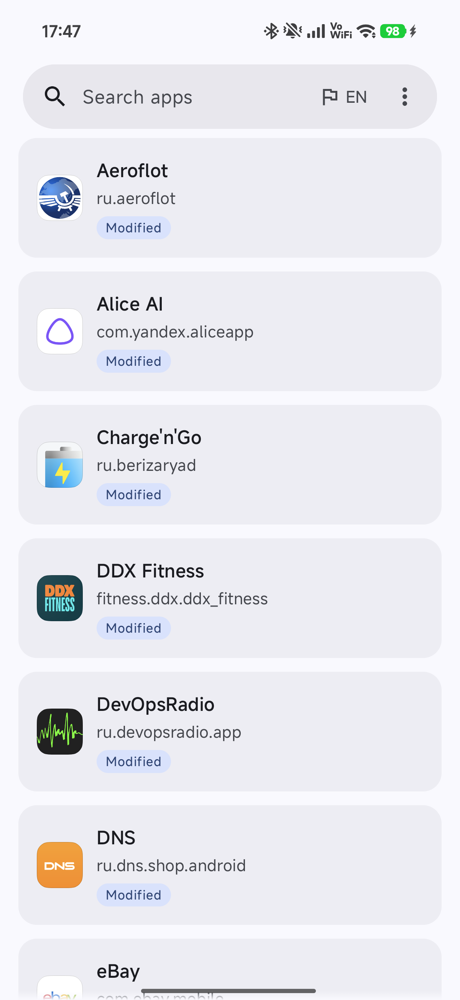
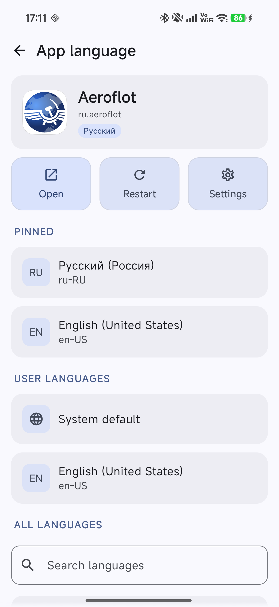
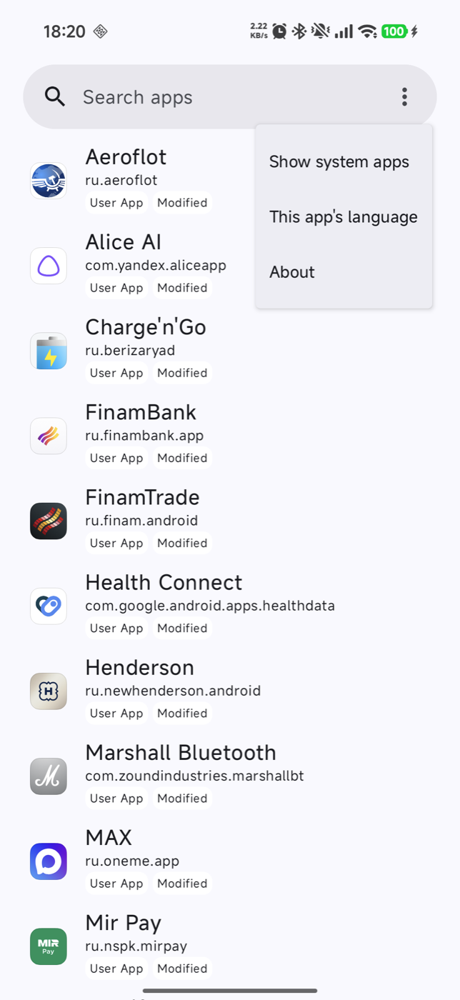
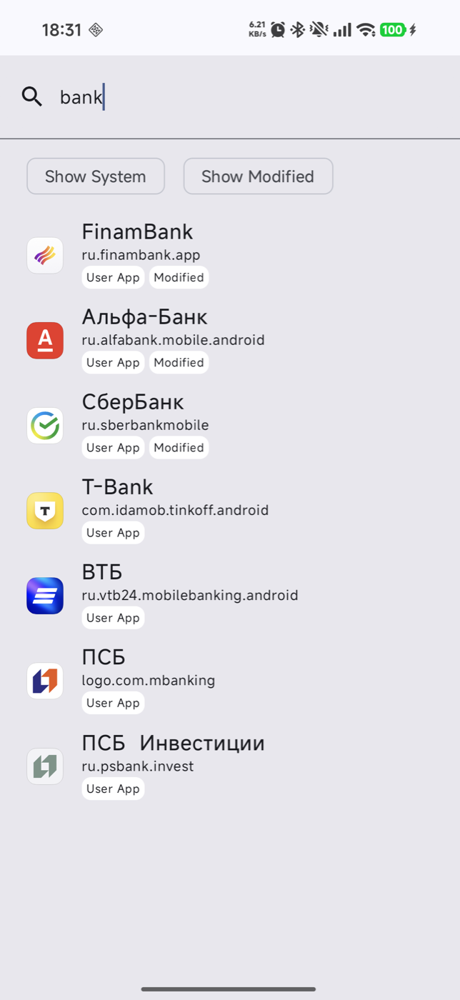
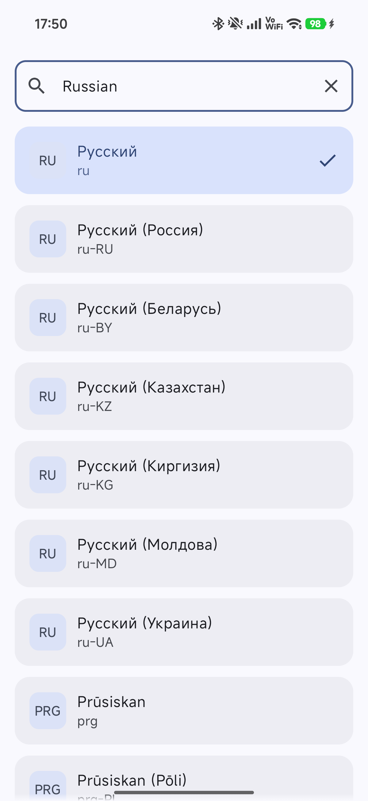
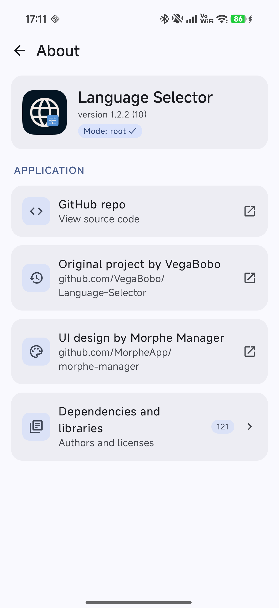
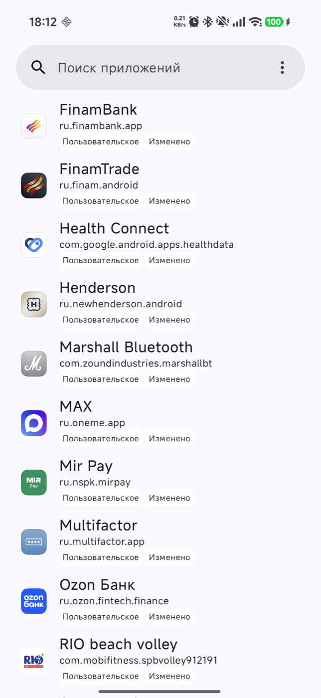
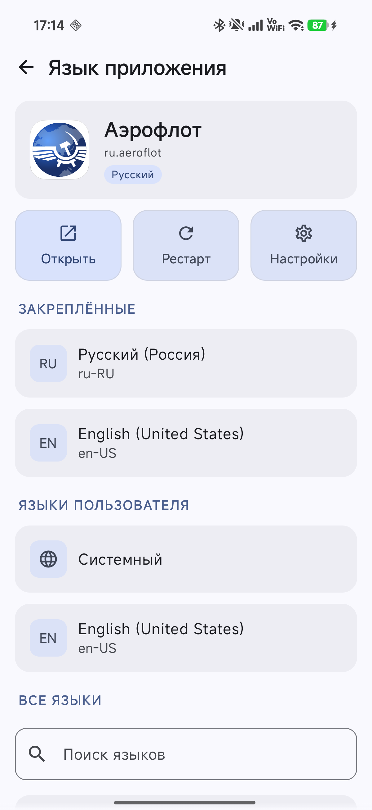
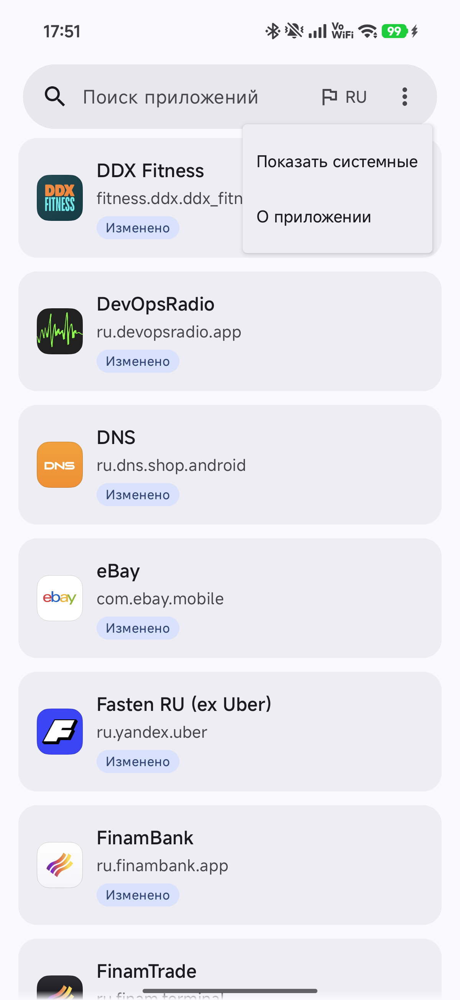
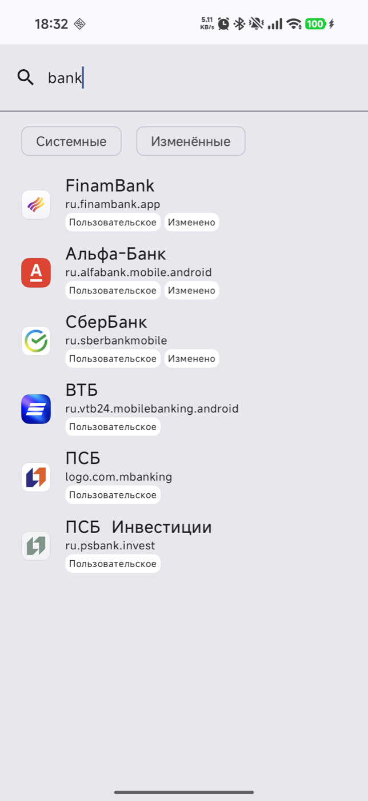
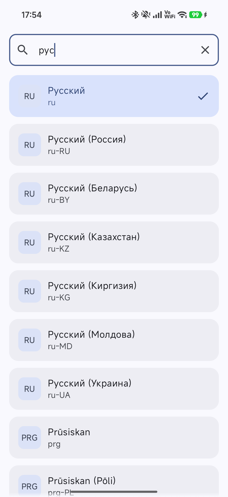
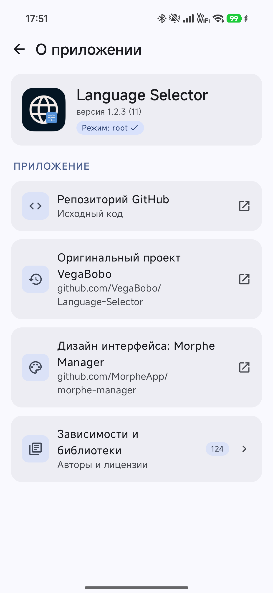
How to use
Как пользоваться
- Option A, root: grant root to Language Selector in KernelSU/APatch (Superuser tab) or Magisk, then open the app.
- Option B, Shizuku: start Shizuku via Wireless debugging (again after every reboot), open the app, tap Proceed and Allow.
- Pick an app. Apps with a changed language are marked Modified and listed first; search finds apps by name or package, ⋮ → Show system apps adds system apps.
- Pick a language: Pinned, User languages or All languages. A language in All languages opens its regions; Search languages finds a language or region by name or tag. The current language has a check mark.
- If the app keeps the old language, tap Restart. Open launches the app, Settings opens its system App info page.
- Long-press a language to pin it. The Quick Settings tile cycles the foreground app through pinned languages.
- The button next to ⋮ in the search bar (flag and language code: EN, RU or ZH) sets the language of Language Selector itself: English, Russian or Chinese (Simplified).
- Вариант A, root: выдайте Language Selector root в KernelSU/APatch (вкладка "Суперпользователь") или Magisk и откройте приложение.
- Вариант B, Shizuku: запустите Shizuku через отладку по Wi-Fi (после каждой перезагрузки заново), откройте приложение, нажмите Продолжить и Разрешить.
- Выберите приложение. Приложения с изменённым языком помечены Изменено и стоят в начале; поиск работает по названию и имени пакета, ⋮ → Показать системные добавляет системные приложения.
- Выберите язык: Закреплённые, Языки пользователя или Все языки. Язык в разделе "Все языки" открывает список регионов; Поиск языков находит язык или регион по названию или тегу. Текущий язык отмечен галочкой.
- Если язык не сменился, нажмите Рестарт. Открыть запускает приложение, Настройки открывают его системную страницу "О приложении".
- Долгое нажатие закрепляет язык. Плитка в быстрых настройках переключает открытое приложение между закреплёнными языками.
- Кнопка рядом с ⋮ в строке поиска (флаг и код языка: EN, RU или ZH) задаёт язык самого Language Selector: английский, русский или китайский (упрощённый).